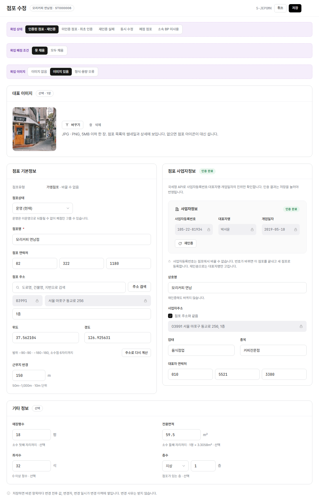

stores/edit.html?embed=1 렌더링(LNB·상단 GNB 제외, 화면 본문만) 위에 번호를 붙이고 우측에 설명을 매칭했다. manyfast S-JEPOMK 기준(상태 전환은 S-MNRZOM과 같은 조건).
화면명
화면경로
편집 모드: "핀 추가"를 누르고 화면을 한 번 클릭하면 그 자리에 새 번호가 생깁니다(또는 아래 "+ 항목 추가"로 기본 위치에 바로 추가). 기존 핀은 드래그로 옮기고, 오른쪽 × 로 지웁니다. Shift(또는 Ctrl)+클릭으로 핀 여러 개를 한꺼번에 선택해 같이 드래그할 수 있습니다. 빈 곳을 클릭하면 선택이 풀립니다. 항목명·설명은 클릭해서 바로 고치세요. 다 끝나면 "내보내기"로 새 HTML 파일을 받아 저장소 파일과 바꿔주세요(이 브라우저에는 임시로 자동저장됩니다).

Description
+ 항목 추가 (기본 위치에 추가 — 드래그로 옮기세요)
"목업 상태" · "목업 폐점 조건" · "목업 이미지" 토글은 실제 화면 요소가 아니라 목업 자체의 상태 전환 컨트롤이라 번호에서 제외했다. 폐점 조건 미충족 팝업과 상태 전환 확인 팝업은 기본 화면에 보이지 않아(점포상태를 바꿀 때만 뜸) 번호 대신 5번 항목 설명에 규칙을 적었다. 상단 GNB와 좌측 LNB는 이 화면정의서 스크린샷 자체에서 제외했다(embed 모드).